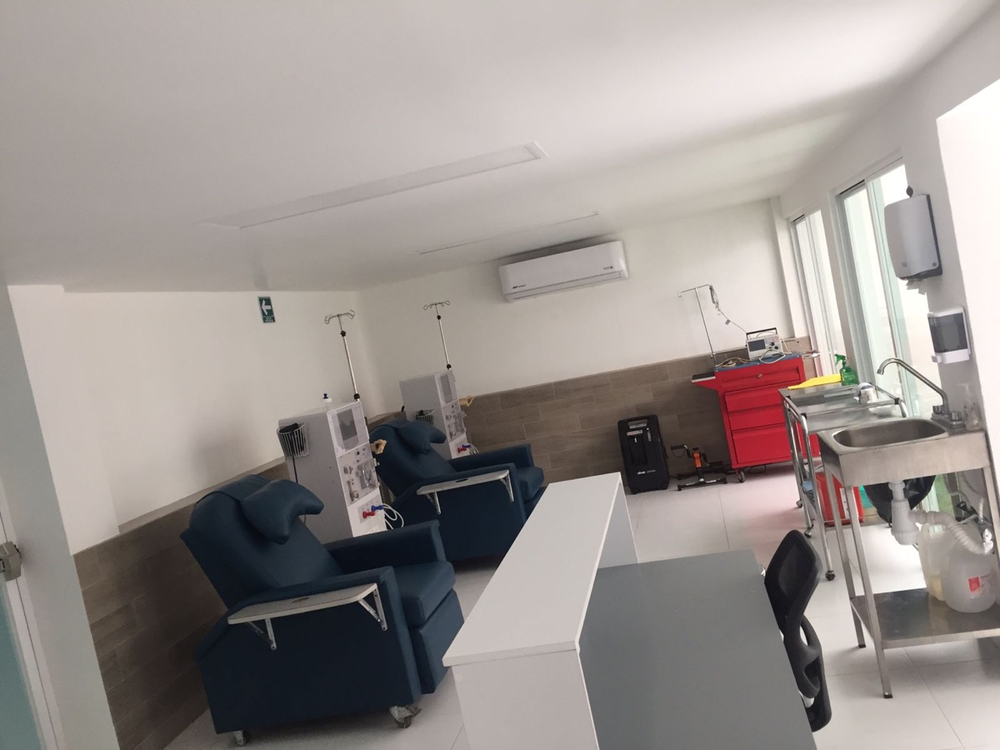

Mi familiar espera lugar o viaja a Colima
Tenemos lugares disponibles esta misma semana. Hemodiálisis a minutos de tu casa, sin traslados largos, con horarios que se adaptan a tu familia.
Pregunta por un lugarLugares disponibles esta semana
Sin viajar a Colima para cada sesión. Médico altamente capacitado en cada turno y nefrólogo supervisando tu tratamiento.
313 151 9215 · Valentín Gómez Farías 699, Tecomán
Pacientes y familias
Cada situación es distinta. Escríbenos y te orientamos según la tuya.
Tenemos lugares disponibles esta misma semana. Hemodiálisis a minutos de tu casa, sin traslados largos, con horarios que se adaptan a tu familia.
Pregunta por un lugarEs normal sentirse abrumado. Te orientamos sin costo: el proceso paso a paso, dudas sobre catéter, fístula y frecuencia de sesiones. No tienen que resolver esto solos.
Recibe orientación sin costoVen a conocer la unidad sin compromiso: equipos, sala de espera para acompañantes y el equipo que atenderá a tu familiar. Te la mostramos con gusto.
Agenda tu visita¿De paso por Tecomán, Manzanillo o la costa? Sesiones temporales con tu mismo esquema. Solo necesitas tu resumen clínico y últimos laboratorios. Confirmación el mismo día.
Reserva tu sesiónAtención renal integral
Sesiones con equipos modernos, monitoreo continuo y protocolos supervisados por nefrólogo en cada turno.
Diagnóstico oportuno y manejo integral de la enfermedad renal, para frenar su avance a tiempo.
Sesiones temporales para visitantes, con tu mismo esquema de tratamiento y confirmación el mismo día.
Atención urológica con el Dr. José Llamas Ríos, cirujano urólogo: litiasis renal, próstata y más.

Puertas abiertas
Elegir dónde recibirá hemodiálisis tu familiar es una decisión importante. Por eso te invitamos a visitarnos: recorre la unidad, conoce los equipos y resuelve tus dudas directamente con nosotros. Sin compromiso.
Agenda una visitaNuestro equipo
Nefrólogo · Director de la unidad · Responsable Sanitario
Cada sesión en Renalia Tecomán se realiza bajo la supervisión directa de un nefrólogo, con médico altamente capacitado en cada turno y personal de enfermería especializado en terapia renal.
Atención urológica: Dr. José Llamas Ríos, cirujano urólogo.
Visítanos
DirecciónValentín Gómez Farías 699, esq. Miguel Bracamontes
Tecomán, Colima · CP 28110
HorarioLunes a sábado · 7:00 a.m. – 3:00 p.m.
Teléfono / WhatsApp313 151 9215
Correorenaliatecoman@gmail.com
Cómo llegarRespondemos en horario de atención: lunes a sábado, 7:00 a.m. – 3:00 p.m.